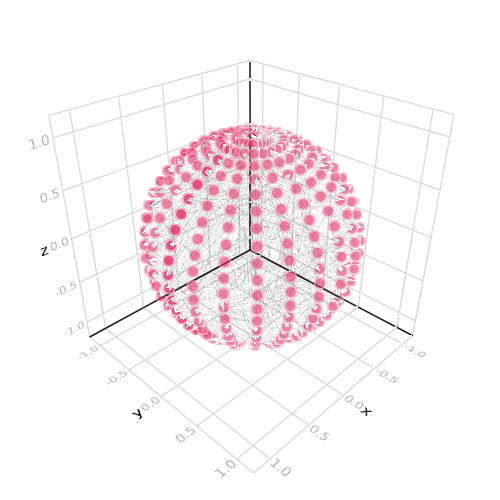
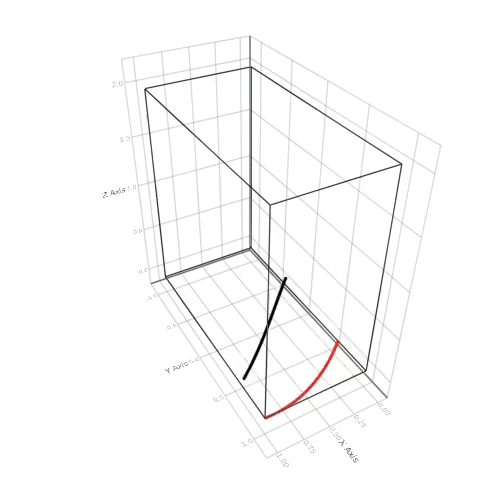
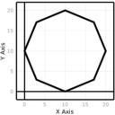
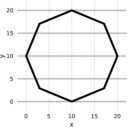
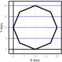
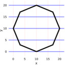
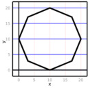
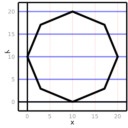
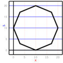
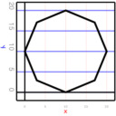

lines
Time Series
Tags: 2d, lines.
using Makie
function run_example()
f0 = 1/2; fs = 100;
winsec = 4; hopsec = 1/60
nwin = round(Integer, winsec*fs)
nhop = round(Integer, hopsec*fs)
# do the loop
frame_start = -winsec
frame_time = collect((0:(nwin-1)) * (1/fs))
aframe = sin.(2*pi*f0.*(frame_start .+ frame_time))
scene = lines(frame_start .+ frame_time, aframe)
lineplot = scene[end]
N = 50
record(scene, "./docs/media/time_series.mp4", 1:N) do i
aframe .= sin.(2*pi*f0.*(frame_start .+ frame_time))
# append!(aframe, randn(nhop)); deleteat!(aframe, 1:nhop)
lineplot[1] = frame_start .+ frame_time
lineplot[2] = aframe
AbstractPlotting.update_limits!(scene)
AbstractPlotting.update!(scene)
sleep(hopsec)
frame_start += hopsec
end
end
run_example()
Fill between
Tags: 2d, band, fill_between, lines.
using Makie
using AbstractPlotting: fill_between!
x = -5:0.01:5
y1 = -5 .* x .* x .+ x .+ 10
y2 = 5 .* x .* x .+ x
lines(x, y1)
lines!(x, y2)
fill_between!(x, y1, y2, where = y2 .> y1, color = :yellow)
fill_between!(x, y1, y2, where = y2 .<= y1, color = :red)

Hbox
Tags: 2d, hbox, lines, scatter.
using Makie
t = range(-122277.93103448274, stop=-14798.035304081845, length=29542)
x = -42 .- randn(length(t))
sc1 = scatter(t, x, color=:black, markersize=sqrt(length(t)/20))
sc2 = lines(t[1:end-1], diff(x), color = :blue)
hbox(sc2, sc1)

Customize Axes
Tags: 2d, axis, lines.
using Makie
x = LinRange(0,3pi,200); y = sin.(x)
lin = lines(x, y, padding = (0.0, 0.0), axis = (
names = (axisnames = ("", ""),),
grid = (linewidth = (0, 0),),
))

Line Function
Tags: 2d, 3d, lines.
using Makie
scene = Scene()
x = range(0, stop = 3pi)
lines!(scene, x, sin.(x))
lines!(scene, x, cos.(x), color = :blue)

Connected Sphere
Tags: 3d, axis, lines, scatter, views.
using Makie
large_sphere = Sphere(Point3f0(0), 1f0)
positions = decompose(Point3f0, large_sphere)
linepos = view(positions, rand(1:length(positions), 1000))
scene = lines(linepos, linewidth = 0.1, color = :black)
scatter!(scene, positions, strokewidth = 10, strokecolor = :white, color = RGBAf0(0.9, 0.2, 0.4, 0.6))
scene

Moire
Tags: 3d, camera, lines, linesegments, mp4, record, rotate_cam!, update_cam!.
using Makie
function cartesian(ll)
return Point3f0(
cos(ll[1]) * sin(ll[2]),
sin(ll[1]) * sin(ll[2]),
cos(ll[2])
)
end
fract(x) = x - floor(x)
function calcpositions(rings, index, time, audio)
movement, radius, speed, spin = 1, 2, 3, 4;
position = Point3f0(0.0)
precision = 0.2f0
for ring in rings
position += ring[radius] * cartesian(
precision *
index *
Point2f0(ring[spin] + Point2f0(sin(time * ring[speed]), cos(time * ring[speed])) * ring[movement])
)
end
amplitude = audio[round(Int, clamp(fract(position[1] * 0.1), 0, 1) * (25000-1)) + 1]; # index * 0.002
position *= 1.0 + amplitude * 0.5;
position
end
rings = [(0.1f0, 1.0f0, 0.00001f0, Point2f0(0.2, 0.1)), (0.1f0, 0.0f0, 0.0002f0, Point2f0(0.052, 0.05))]
N2 = 25000
t_audio = sin.(range(0, stop = 10pi, length = N2)) .+ (cos.(range(-3, stop = 7pi, length = N2)) .* 0.6) .+ (rand(Float32, N2) .* 0.1) ./ 2f0
start = time()
t = (time() - start) * 100
pos = calcpositions.((rings,), 1:N2, t, (t_audio,))
scene = lines(pos, color = RGBAf0.(to_colormap(:RdBu, N2), 0.6), thickness = 0.6f0, show_axis = false)
linesegments!(scene, FRect3D(Vec3f0(-1.5), Vec3f0(3)), raw = true, linewidth = 3, linestyle = :dot)
eyepos = Vec3f0(5, 1.5, 0.5)
lookat = Vec3f0(0)
update_cam!(scene, eyepos, lookat)
l = scene[1]
N = 150
record(scene, "./docs/media/moire.mp4", 1:N) do i
t = (time() - start) * 700
pos .= calcpositions.((rings,), 1:N2, t, (t_audio,))
l[1] = pos # update argument 1
rotate_cam!(scene, 0.0, 0.01, 0.01)
end
Line GIF
Tags: 3d, animated, gif, lines, offset, record.
using Makie
us = range(0, stop = 1, length = 100)
scene = Scene()
scene = linesegments!(scene, FRect3D(Vec3f0(0, -1, 0), Vec3f0(1, 2, 2)))
p = lines!(scene, us, sin.(us .+ time()), zeros(100), linewidth = 3)[end]
lineplots = [p]
translate!(p, 0, 0, 0)
colors = to_colormap(:RdYlBu)
#display(scene) # would be needed without the record
N = 150
path = record(scene, "./docs/media/line_gif.gif", 1:N) do i
global lineplots, scene
if length(lineplots) < 20
p = lines!(
scene,
us, sin.(us .+ time()), zeros(100),
color = colors[length(lineplots)],
linewidth = 3
)[end]
pushfirst!(lineplots, p)
translate!(p, 0, 0, 0)
#TODO automatically insert new plots
insert!(Makie.GLMakie.global_gl_screen(), scene, p)
else
lineplots = circshift(lineplots, 1)
lp = first(lineplots)
lp[2] = sin.(us .+ time())
translate!(lp, 0, 0, 0)
end
for lp in Iterators.drop(lineplots, 1)
z = translation(lp)[][3]
translate!(lp, 0, 0, z + 0.1)
end
end
path

Interaction with Mouse
Tags: interaction, interactive, lines, marker, record, record_events, scatter.
using Makie
using LinearAlgebra
scene = Scene(raw = true, camera = cam2d!, resolution = (500, 500))
r = range(0, stop = 3, length = 4)
the_time = Node(time())
last_open = false
@async while true
global last_open
the_time[] = time()
# this is a bit awkward, since the isopen(scene) is false
# as long as the scene isn't displayed
last_open && !isopen(scene) && break
last_open = isopen(scene)
sleep(1/25)
end
pos = lift(scene.events.mouseposition, the_time) do mpos, t
map(LinRange(0, 2pi, 60)) do i
circle = Point2f0(sin(i), cos(i))
mouse = to_world(scene, Point2f0(mpos))
secondary = (sin((i * 10f0) + t) * 0.09) * normalize(circle)
(secondary .+ circle) .+ mouse
end
end
lines!(scene, pos)
p1 = scene[end]
p2 = scatter!(
scene,
pos, markersize = 0.1f0,
marker = :star5,
color = p1[:color],
)[end]
center!(scene)
t = Theme(raw = true, camera = campixel!)
b1 = button(t, "color")
b2 = button(t, "marker")
msize = slider(t, 0.1:0.01:0.5)
on(b1[end][:clicks]) do c
p1[:color] = rand(RGBAf0)
end
markers = ('π', '😹', '⚃', '◑', '▼')
on(b2[end][:clicks]) do c
p2[:marker] = markers[rand(1:5)]
end
on(msize[end][:value]) do val
p2[:markersize] = val
end
RecordEvents(hbox(
vbox(b1, b2, msize),
scene
), "./docs/media/interaction_with_mouse")
Mouse Hover
Tags: hover, interaction, lift, lines, on, poly, popup, record_events, text, translate.
using Makie
using Colors, Observables
r = range(0, stop=5pi, length=100)
scene = Scene(resolution = (500, 500))
lines!(scene, r, sin.(r), linewidth = 3)
lineplot = scene[end]
visible = node(:visible, false)
poprect = lift(scene.events.mouseposition) do mp
FRect((mp .+ 5), 250, 40)
end
textpos = lift(scene.events.mouseposition) do mp
Vec3f0((mp .+ 5 .+ (250/2, 40 / 2))..., 120)
end
popup = poly!(campixel(scene), poprect, raw = true, color = :white, strokewidth = 2, strokecolor = :black, visible = visible)
rect = popup[end]
translate!(rect, Vec3f0(0, 0, 100))
text!(popup, "( 0.000, 0.000)", textsize = 30, position = textpos, color = :darkred, align = (:center, :center), raw = true, visible = visible)
text_field = popup[end]
scene
x = Node(false)
on(scene.events.mouseposition) do event
plot, idx = Makie.mouse_selection(scene)
if plot == lineplot && idx > 0
visible[] = true
text_field[1] = sprint(io-> print(io, round.(Float64.(Tuple(lineplot[1][][idx])), digits = 3)))
else
visible[] = false
end
return
end
RecordEvents(scene, "./docs/media/mouse_hover")
Travelling wave
Tags: animated, documentation, interaction, lines, updating.
using Makie
scene = Scene()
mytime = Node(0.0)
f(v, t) = sin(v + t)
scene = lines!(
scene,
lift(t -> f.(range(0, stop = 2pi, length = 50), t), mytime),
color = :blue)
p1 = scene[end];
N = 100
record(scene, "./docs/media/travelling_wave.mp4", range(0, stop = 4pi, length = N)) do i
mytime[] = i
end
Axis theming
Tags: axis, documentation, lines, stepper.
using Makie
using GeometryTypes
scene = Scene()
points = decompose(Point2f0, Circle(Point2f0(10), 10f0), 9)
lines!(
scene,
points,
linewidth = 8,
color = :black
)
axis = scene[Axis] # get axis
scene
st = Stepper(scene, "./docs/media/axis_theming")
step!(st);
axis[:frame][:linewidth] = 5
step!(st)
axis[:grid][:linewidth] = (1, 5)
step!(st)
axis[:grid][:linecolor] = ((:red, 0.3), (:blue, 0.5))
step!(st)
axis[:names][:axisnames] = ("x", "y ")
step!(st)
axis[:ticks][:title_gap] = 1
step!(st)
axis[:names][:rotation] = (0.0, -3/8*pi)
step!(st)
axis[:names][:textcolor] = ((:red, 1.0), (:blue, 1.0))
step!(st)
axis[:ticks][:font] = ("Dejavu Sans", "Helvetica")
step!(st)
axis[:ticks][:rotation] = (0.0, -pi/2)
step!(st)
axis[:ticks][:textsize] = (3, 7)
step!(st)
axis[:ticks][:gap] = 5
step!(st)
Step 1
Step 2
" />
Step 3
" />
Step 4
" />
Step 5
" />
Step 6
" />
Step 7
" />
Step 8
Step 9
" />
Step 10
Step 11
Step 12
" />
Layouting
Tags: heatmap, layout, lines, scatter, surface, vbox.
using Makie
p1 = scatter(rand(10), markersize = 1)
p2 = lines(rand(10), rand(10))
p3 = surface(0..1, 0..1, rand(100, 100))
p4 = heatmap(rand(100, 100))
x = 0:0.1:10
p5 = lines(0:0.1:10, sin.(x))
pscene = vbox(
hbox(p1, p2),
p3,
hbox(p4, p5, sizes = [0.7, 0.3]),
sizes = [0.2, 0.6, 0.2]
)